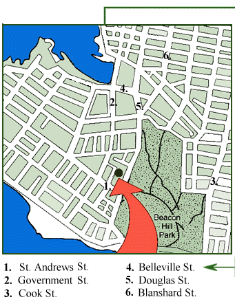
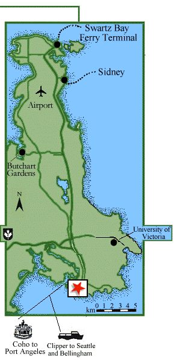

| |||
| Accommodations | Victoria Interests | Location | Why Live In Victoria |
|  |  |
| Victoria is on the Southern tip of Vancouver Island on the west coast of Canada. To drive to Victoria from the mainland of British Columbia, you have to take a ferry from Horseshoe Bay or Twassassen ferry terminals; or fly into Victoria International Airport. There is also ferry service to and from Seattle, Bellingham, and Port Angeles, Washington. |
|
|
||||||||
|
|
||||||||
| Joan Peggs - Proprietor | ||||||||
| 239 St. Andrews Street, Victoria | ||||||||
| British Columbia, V8V 2N1 | ||||||||
| Tel: 250.384.8613 - Toll Free: 1.800.668.5993 | ||||||||
| E-mail: info@thewoodbury.com | ||||||||
| Web site: The Woodbury Victoria BC | ||||||||
| - Re Design Oct 2002 - | ||||||||